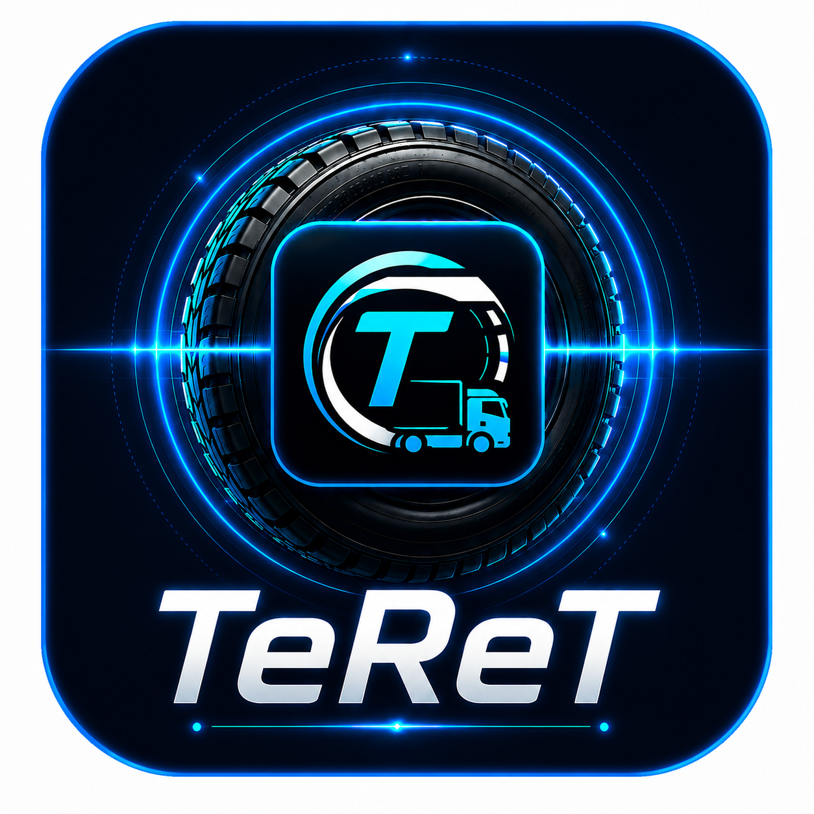

Brži put do prijevoza
TeReT je digitalna platforma koja povezuje naručitelje prijevoza i prijevoznike kroz sustav obrnute licitacije.
Naručitelj objavljuje teret, a prijevoznici šalju svoje ponude. Nakon prihvaćanja ponude i plaćanja provizije prijevoznik otključava kontakt podatke .
TeReT is a digital freight marketplace connecting shippers and carriers through a reverse auction system.
Shippers publish transport requests while carriers submit competitive offers. After an offer is accepted and fee is paid, the carrier unlocks contact details and arranges transportation.